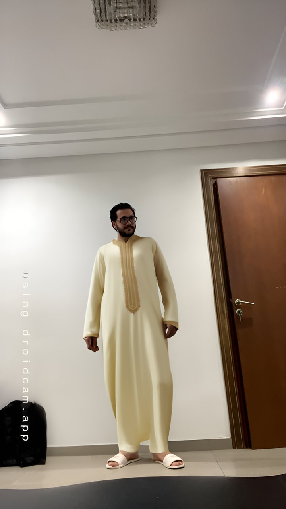
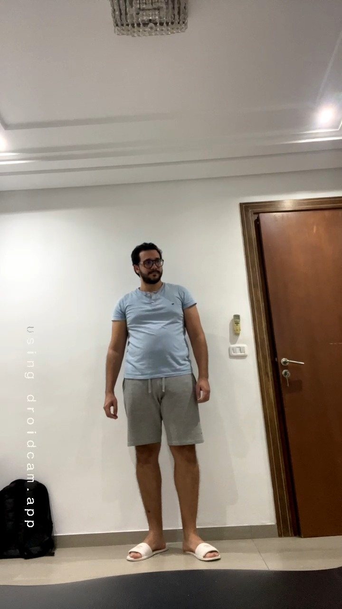
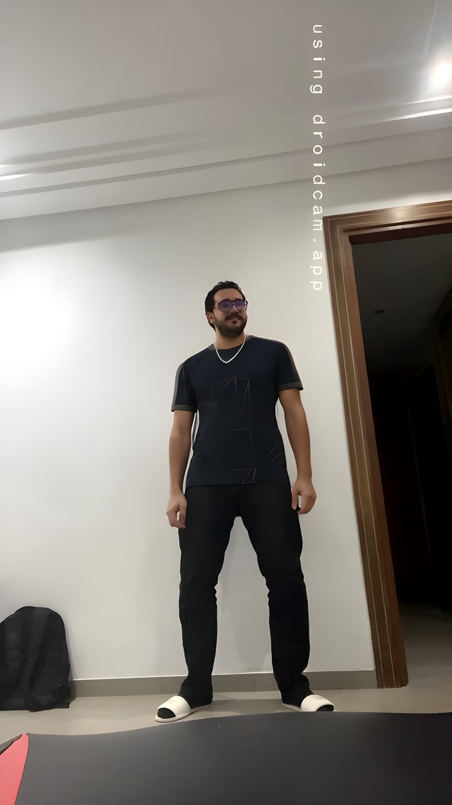
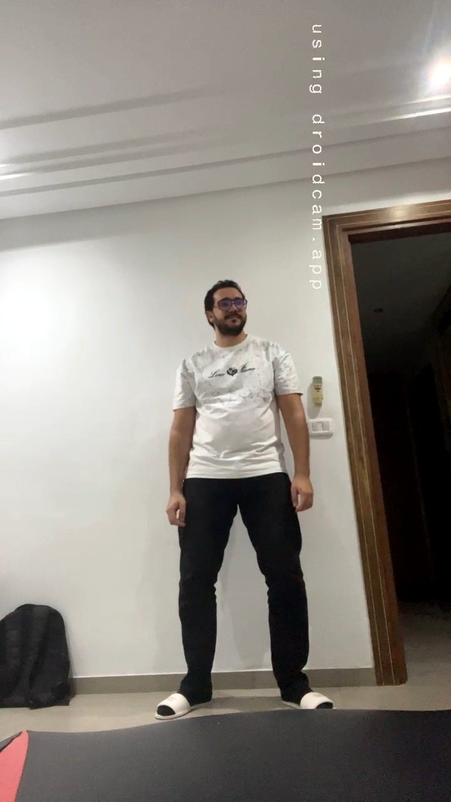
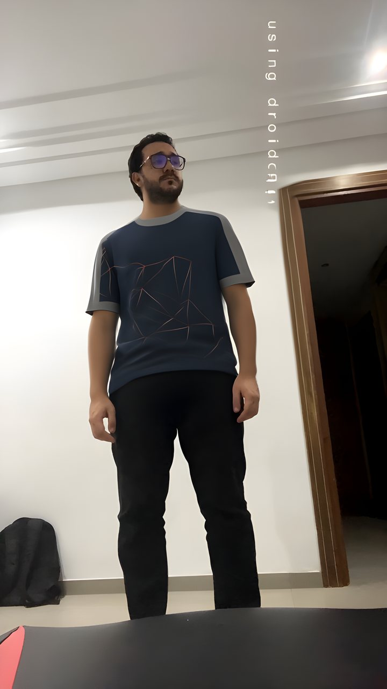
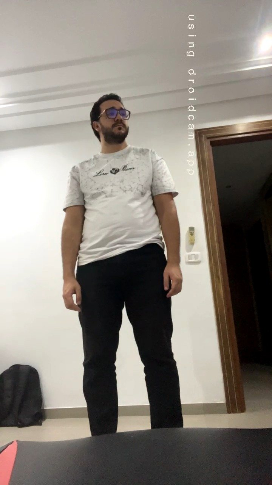
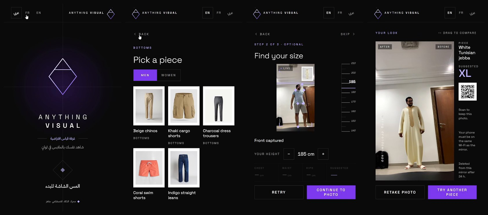
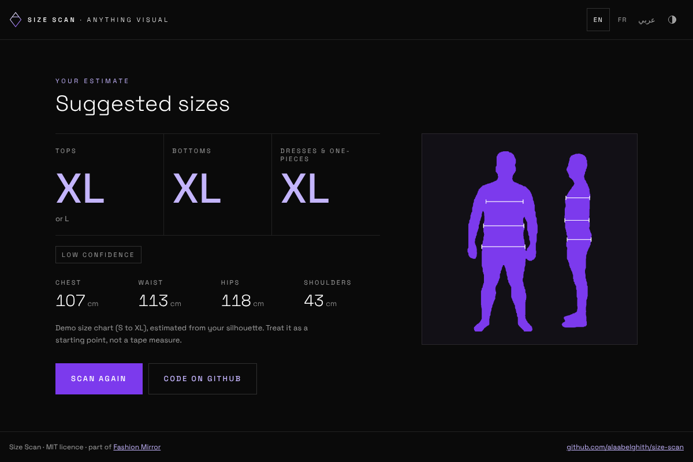
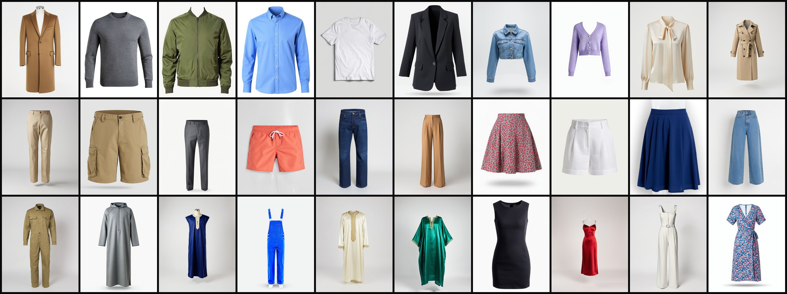

← Portfolio Own product · AI try-on kiosk · 2026
Fashion Mirror
An AI fitting-room mirror for clothing shops. A shopper picks a piece on the screen, stands in front of the camera and sees themselves wearing it in under 20 seconds, then scans a QR code to keep the photo on their phone. Arabic, French and English, and everything runs on the shop’s own PC: no cloud, photos deleted after 24 hours.
The clip is recorded live on the kiosk, with a phone as the camera. The sizing step is open source: try it with your own camera in the Size Scan demo, code on GitHub: size-scan. The try-on software itself is not open source; the overview is at fashion-mirror. Looking for pilot shops in Tunisia.


BeforeAfter

BeforeAfter

BeforeAfter


Frequently asked questions
How does a shopper use Fashion Mirror?
A shopper chooses a clothing piece on the kiosk screen, stands in front of the camera and views the try-on result. A QR link opens the result on the shopper’s phone. The prototype is designed for a shop floor, with a full-screen kiosk and a countdown capture flow.
Does the try-on use a cloud service?
No. The prototype runs on the kiosk PC without a cloud service or account. Shopper photos are deleted automatically after 24 hours, and QR photo sharing uses the shop’s Wi-Fi. The system is designed for an in-store flow from choosing a garment to viewing the try-on result on a phone.
Which languages and product types are shown?
The interface supports Arabic, French and English, including right-to-left layout. The demo collection includes tops, bottoms and one-pieces, with 30 pieces prepared for demonstration. The demo products are not real brands’ catalogue photos; a shop would replace them with its own approved catalogue.